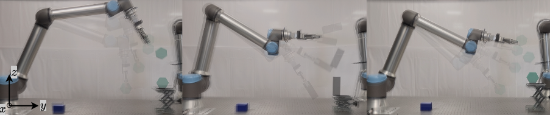
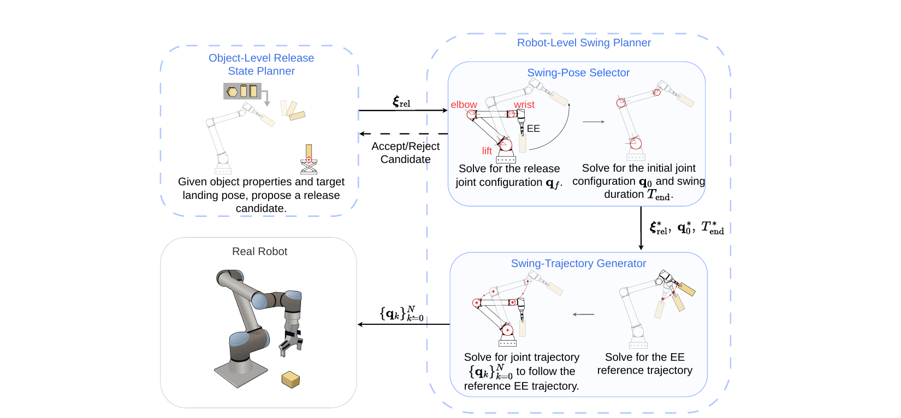

The robot has only a limited time window to manipulate the object before release. Most prior work in robotic throwing focuses on landing position—often tossing into baskets or container-like targets—rather than requiring a stable landing on a designated support face. Controlling the full landing pose is harder because both position and orientation must be achieved together. For a high-DoF manipulator, this becomes even more challenging due to the tight coupling between end-effector motion and joint configuration. Requiring the object to finally settle stably on the intended landing face after impact makes the task harder again.
Failure 1: Orientation error at impact
The object reaches the landing region, but its orientation is too far from the desired pose when it contacts the landing surface.
Failure 2: Correct orientation but unstable impact
The object arrives with the right orientation, but the landing is too energetic and it bounces instead of settling stably.
Failure 3: Touchdown followed by toppling
The object initially contacts the landing surface successfully, but fails to remain stably supported and falls afterward.

FlipItRight addresses stable planar pose-targeted throw-flip with a high-degree-of-freedom robot manipulator. The framework separates the problem into an object-level planner, which searches for release states consistent with the desired landing pose, and a robot-level planner, which checks whether those candidates are executable and constructs a feasible swing trajectory.
This release-state representation supports candidate filtering, adaptive selection of release and pre-swing robot configurations, and structured motion near the release event. In particular, the final portion of the swing is designed to maintain approximately constant end-effector velocity, reducing sensitivity to uncertainty in the physical release timing.
The method is validated on a real robot across objects with different shapes, sizes, and masses. Across 120 trials, FlipItRight achieves a 90% overall success rate without requiring prior task data or a learned model, allowing direct planning for new objects and landing targets.
A two-stage planning pipeline links landing-pose requirements to an executable high-DoF throwing motion.
Given object properties and a desired landing pose, the planner searches for candidate release position, orientation, linear velocity, and angular velocity. Ballistic propagation evaluates where each candidate would land.
Candidate release states are tested for robot executability. The planner selects a release configuration, initial configuration, and swing duration while encouraging a smooth, robust approach to the release state.
A reference end-effector motion is converted into a feasible joint-space trajectory. The final swing phase uses approximately constant linear and angular velocity to reduce sensitivity to release-timing error.

FlipItRight decomposes pose-targeted throw-flip into object-level release-state planning and robot-level swing-motion planning.
FlipItRight separates what object state should be achieved at release from how the robot should realize it, bridging landing-pose requirements and robot motion generation.
This enables filtering of landing-valid but kinematically infeasible candidates, adaptive selection of swing postures, and structured near-release motion with approximately constant end-effector linear and angular velocities, improving robustness to release-timing uncertainty.
Evaluated on a UR10e manipulator with an OnRobot RG6 gripper.
Overall success
108 successful throw-flips out of 120 real-robot trials.
Object-target scenarios
Multiple objects, landing distances, landing heights, and target orientations on a real UR10e platform.
The experiments measure whether each object lands stably on the intended support face and report landing-distance error for successful trials. The study also analyzes physical release timing, highlighting how gripper actuation and detachment uncertainty can affect the realized release state.
@misc{dawne2026flipitrightstableposetargetedthrowflip,
title={FlipItRight: Stable Pose-Targeted Throw-Flip Across Diverse Objects},
author={Axel Dawne and Shinkyu Park},
year={2026},
eprint={2606.01713},
archivePrefix={arXiv},
primaryClass={cs.RO},
url={https://arxiv.org/abs/2606.01713},
}